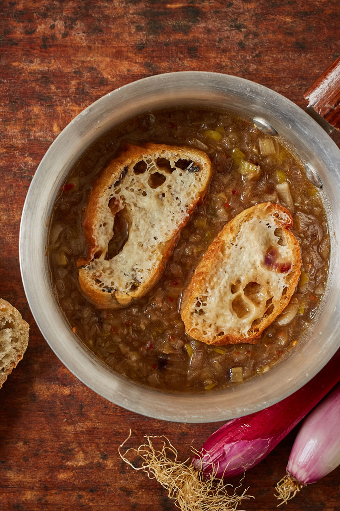
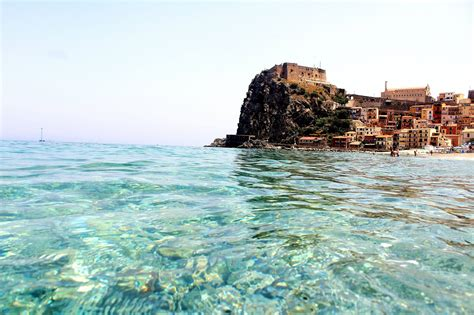
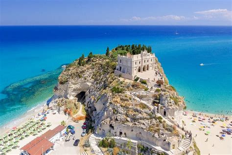
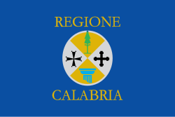
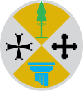

Calabria
Panoramica
La Calabria è una regione dell’Italia meridionale, situata nella “punta dello stivale”. È bagnata dal Mar Ionio e dal Mar Tirreno. La regione è conosciuta per le sue coste selvagge, le montagne e la vita tradizionale.
Meno turistica di altre regioni italiane, offre un’esperienza più autentica. Ha una storia antica, una forte identità regionale e bellissimi paesaggi.
Fatti in Breve
- Capoluogo: Catanzaro
- Lingua Regionale: Dialetti calabresi
- Popolazione: Circa 1,9 milioni
- Famosa per: Spiagge, borghi, montagna, cibo piccante
- Curiosità: I Bronzi di Riace, due antiche statue greche, sono stati trovati nel mare calabrese!
Piatti Tipici
‘Nduja

Fileja

Pitta

Licurdia

Luoghi Famosi
Aspromonte

Bronzi di Riace

Scilla
Tropea

Gerace

Quando Visitare
I mesi ideali sono maggio, giugno, settembre e ottobre. Offrono bel tempo e pochi turisti, perfetti per godere delle spiagge e dei borghi montani.
Simboli Regionali
- Bandiera: 
- Stemma: 
- Animale Simbolo: Il lupo e il maiale nero calabrese